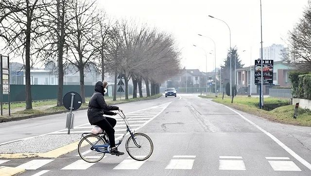
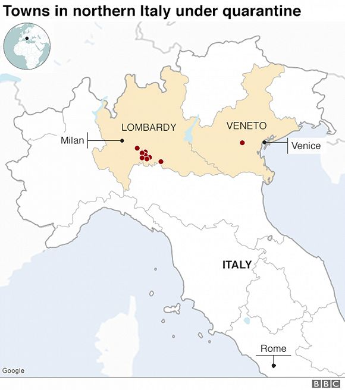
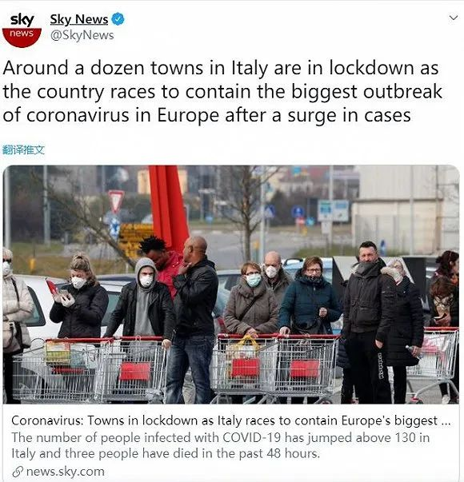

确诊157例，11个城镇“封城”！意大利成欧洲疫情最严重国家…
原文链接 备份链接 截至当地时间24日零时，意大利累计确诊157例新冠病毒肺炎感染病例，2人治愈出院，新增1例死亡病例，累计3例死亡病例。据欧联通讯社报道，死者是一位身患癌症的年长女性，确诊被感染新冠肺炎病毒后不治。 意大利紧急民防部部 …

伦巴第大区。图片来源：天空新闻截图
记者：安晶
“
虽然前三例病例出现在罗马，但疫情并没有在罗马爆发，而是发生在伦巴第大区。
”
面对新型冠状病毒肺炎疫情的爆发，成为欧洲重灾区的意大利宣布北部11个市镇进入封城隔离，违反防疫要求者将面临监禁或罚款处罚。
截至当地时间2月24日零时，意大利累计确诊新冠肺炎病例已达157例，其中三例死亡、两人治愈出院。意大利也成为欧洲受疫情影响最严重的国家。
虽然意大利的首例确诊病例出现在罗马，但疫情爆发却集中在北部伦巴第大区。由于传染源头不明，当局正在追查“零号病人”。
据《每日电讯报》和《卫报》2月24日报道，随着意大利出现第三例死亡病例，北部伦巴第大区和威尼托大区的11个市镇于周日开始进入封城隔离。
根据意大利总理孔特周六晚发布的行政令，封城隔离将影响伦巴第大区的10个市镇以及威尼托大区的一个镇的共5万名居民。
在未来两周内，在没有特殊许可下，民众不得出入这11个市镇。在这11个市镇里，学校、公司、餐馆和除药店之外的商店关闭，所有文体活动和宗教活动取消，经过该地区的火车不得停靠，居民被要求留在家中、减少社交活动。
违反防疫要求者将面临从206欧元罚款到最长三个月监禁的处罚。警方已开始在街头进行巡逻，孔特此前表示，如果有需要，将派出军队确保防疫要求得到执行。

虽然米兰和威尼斯不在封城名单上，但米兰已经宣布暂时关闭大学和米兰大教堂，米兰时装周活动和一系列体育赛事也将受影响。
威尼斯则宣布取消狂欢节、关闭博物馆，并对包括船只在内的所有交通工具进行消毒。
在米兰和伦巴第大区的其他部分城镇，已经出现戴着口罩的民众在超市外排队购买食品和生活用品的情况。

图片来源：Twitter
据美联社报道，在当地网络平台上，四瓶消毒洗手液已经被炒到了200欧元的天价。
孔特就此接受媒体采访时表示，可以理解民众的担忧，但“没必要恐慌”。他在宣布封城令时呼吁民众对意大利的政治和科学机构有信心，称各机构“正在尽一切可能”控制疫情。
中国驻意大利使馆已经发布提醒指出，根据意大利卫生部21日紧急颁布的卫生条例，14日内去过中国相关地区的所有人员，必须到当地卫生局（ASL）进行备案，根据卫生局工作人员指导在住所进行隔离观察并接受监督。
意大利的首例确诊病例为一对来自武汉的中国夫妇。两人于1月23日抵达意大利，后在罗马接受治疗。与两人一同抵达意大利的团友在进行14天的隔离观察后已经结束隔离。
除这对夫妇之外，罗马出现的第三例病例为一名曾前往中国的意大利人。虽然前三例病例出现在罗马，但疫情并没有在罗马爆发，而是发生在伦巴第大区。
据意大利民防保护部统计，截至23日，至少有110例确诊病例出现在伦巴第大区、21例在相邻的威尼托大区。
面对疫情突然爆发，民防保护部部长博雷利（Angelo Borrelli）指出，目前依然没有找到携带并扩散病毒的“零号病人”。
伦巴第大区的第一例确诊病例为卡萨尔普斯泰尔伦戈镇联合利华公司分部的一名研究人员，现年38岁。
该男子近期并没有到过中国，但1月底与一名从上海返回意大利的朋友一起吃饭。而朋友的病毒检测结果为阴性。
男子确诊后，其怀孕的妻子和一名跑友也被确诊感染。跑友的父亲在科多尼奥镇开了一家酒吧，经常光顾酒吧的三名老年顾客已经被确诊。科多尼奥镇距离卡萨尔普斯泰尔伦戈镇仅10分钟车程。
上周六，一名77岁的女性确诊患者死亡。该患者此前曾前往科多尼奥镇一所医院的急诊室，而就在其到达急诊室前不久，第一名确诊男子曾在急诊室有过停留。
目前，该男子的120多名同事以及曾前往其家中进行检查的一名医生正在进行隔离观察。
除这名男子外，当局也一度把调查方向放在当地的中国居民身上。
男子确诊前曾经常光顾一家咖啡馆，而多名中国居民也是咖啡馆常客。但经过病毒检测后，这几名中国居民的结果为阴性。
伦巴第大区主席丰塔纳（Attilio Fontana）坦言，“非常不幸的是，此前以为是零号病人的人并非零号病人，我们需要从其他地方找线索”。丰塔纳透露，目前有两种假设情况，当局将就此进行追查以找出零号病人。
而随着疫情在意大利爆发，意大利的邻国奥地利已经准备采取预防措施。
周日，由于有两名乘客出现发热症状，一辆从意大利前往德国的火车在尚未进入奥地利时被叫停。奥地利随后暂停了往返意大利的所有火车。直到四小时后，两名乘客检测结果为阴性，奥地利才重新恢复火车运行。
此番波折后，奥地利已经考虑重启与意大利的边境管控。虽然两国均为申根区国家，但在特殊情况下，成员国可以重启边境管控。奥地利政府将于周一就边境管控问题进行商讨。
意大利的另一邻国瑞士目前依然采取观望态度。瑞士卫生部官员表示，虽然意大利的情况令人担忧，但现在判断疫情将扩散到瑞士依然“为时尚早”。
与意大利封锁地区相距不远的法国则表示，法国很有可能出现新的病例，该国正在采购相关医疗设备，为新冠成为大流行性疾病的可能做好应对准备。
德国卫生部已宣布将于周一举行欧盟公共卫生部门电话会议，商讨意大利北部的疫情和应对措施。
未经授权 禁止转载

原文链接 备份链接 截至当地时间24日零时，意大利累计确诊157例新冠病毒肺炎感染病例，2人治愈出院，新增1例死亡病例，累计3例死亡病例。据欧联通讯社报道，死者是一位身患癌症的年长女性，确诊被感染新冠肺炎病毒后不治。 意大利紧急民防部部 …
原文链接 备份链接 体坛周报全媒体驻意大利记者 王勤伯 意大利新冠疫情突然爆发，不少同事、朋友和读者都对我表达了关心，这里就借体坛加APP的一个角落，和大家聊聊我正在经历的意大利疫情。 （1） 先聊一下对意大利卫生防疫系统和本次应对新冠的 …
原文链接 备份链接 由于确诊病例迅速攀升，意大利成为亚洲国家之外疫情最严重的国家。为了控制病毒的扩散，意大利政府从2月22日起在11个市镇采取了“封城”举措。在被封锁地区，只有持特别通行证者才能出入 2月23日，意大利米兰市中心的大教堂广 …
原文链接 备份链接 全国多数省区已实现“零新增”，统计上未见疫情卷土重来证据，也未发现意味着疫情死灰复燃的个案 文/《财经》数据研究员徐进 图/《财经》视觉中心 编辑/谢丽容 今天是农历二月二“龙抬头”。按北方农村传统，今起春耕大忙开 …
原文链接 备份链接 新冠肺炎疫情的发展形势，正在全球范围内急剧变化。 根据中国各省卫健委官方发布消息来看，截至 2 月 24 日上午 9 时，全国已有 23 个省（自治区、直辖市）在 23 日全天的新增确诊病例为零，其中包括北京、湖南、河 …